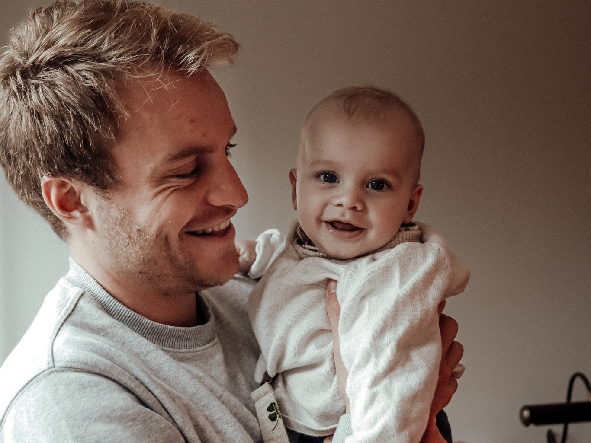
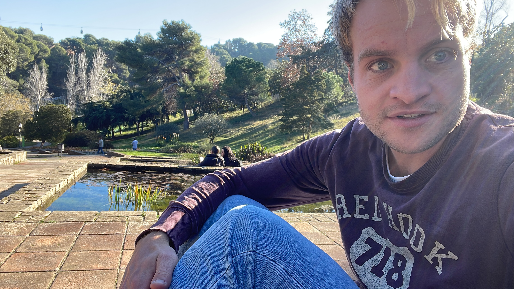

08 Drukte op komst
In de aard van het beestje
terug naar school,
contact met het thuisfront.

Mensen die mij een beetje kennen weten wel dat ik, wanneer ik een idee heb, er vaak voor de volle 100% voor wil gaan. Die gedrevenheid komt in alles terug, zelfs tot een punt waarop ik er soms zelf een beetje moe van word. Ik heb hier echt een gouden gast ontmoet, Koen uit Tilburg. Een nuchtere Hollander die van een biertje houdt en geniet van Barcelona. Hij vertelde me dat hij lekker rustig aan Spaans leert en dat hij alle tijd heeft om er beter in te worden. Bij mij gaat ‘op het gemakkie leren’ dus echt niet. Wonend in Spanje zegt iets in mij dat ik nu de kans moet pakken om Spaans te leren voordat ik er straks spijt van ga krijgen. Ook gesprekken die ik niet goed kan volgen, voeden deze motivatie. Zo ben ik in de kinderbieb te vinden voor prentenboeken. Of ik probeer wat af te spreken met iemand die ook een woordje Spaans spreekt. Maar die motivatie is er niet alleen voor Spaans. Bij rugby probeer ik wat zwaarder te worden en meer te sporten in calisthenics parkjes in de buurt. En met het dansen wil ik ook het liefst net zo goed worden als die beste dansers. Doordat ik zo gedreven ben merk ik echt dat ik als een speer vooruit ga, maar ook dat ik mezelf soms een beetje moet afremmen omdat het af en toe wel erg druk wordt.
 Mijn moeder kwam een weekendje langs in Barcelona met Piet, de man waar ze een tijdje mee samen is. Het was natuurlijk even wennen om vier jaar nadat mijn vader overleden is mijn moeder weer met een andere man te zien. Maar vlak voor ik naar Barcelona vertrok, mocht ik hem al even kort ontmoeten. Hoewel het natuurlijk nooit een vervanging zal zijn, is hij een super vriendelijke man met een goed gevoel voor humor. Het was erg leuk om hun mijn leven in Barcelona te laten zien. Soms mis ik paps natuurlijk, vooral nu de vertrouwde mensen meer op afstand zijn. Hij zou spontaan videobellen en wel zien of de ander opneemt. Toen ik nog voor de klas stond als invaller kwam hij ooit met het idee om met onze klassen te videobellen. Over impulsieve ideeën gesproken, ik heb het waarschijnlijk niet van een vreemde.
Mijn moeder kwam een weekendje langs in Barcelona met Piet, de man waar ze een tijdje mee samen is. Het was natuurlijk even wennen om vier jaar nadat mijn vader overleden is mijn moeder weer met een andere man te zien. Maar vlak voor ik naar Barcelona vertrok, mocht ik hem al even kort ontmoeten. Hoewel het natuurlijk nooit een vervanging zal zijn, is hij een super vriendelijke man met een goed gevoel voor humor. Het was erg leuk om hun mijn leven in Barcelona te laten zien. Soms mis ik paps natuurlijk, vooral nu de vertrouwde mensen meer op afstand zijn. Hij zou spontaan videobellen en wel zien of de ander opneemt. Toen ik nog voor de klas stond als invaller kwam hij ooit met het idee om met onze klassen te videobellen. Over impulsieve ideeën gesproken, ik heb het waarschijnlijk niet van een vreemde.
 Om echt Spaans te leren spreken begon ik in februari aan een vier maanden durende cursus waarbij je vier dagen overdag 2 uur Spaans volgt. Ik zit nu met 25 studenten, onder andere uit Kazachstan, Oman en Bulgarije, dagelijks te blokken voor Spaans. De juffrouw heet Christina en is echt de beste juf die ik ooit heb gehad. Ze vertelt iedere dag wel een leuk nieuwtje over wat er speelt in Barcelona en laat je pas de les in als je een werkwoord goed hebt vervoegd. Ze vertelde ook dat Barcelona vroeger Barcino heette en door de Romeinen al rond het jaar 0 was gesticht. Na de les werk ik in de een studieruimte aan mijn huiswerk en omdat 4 Chinese meiden uit mijn klas hier ook werken, zitten we regelmatig gezellig met zijn alle aan dezelfde tafel. De werkdag ziet er dus als volgt uit: Op de fiets naar de coworking space/kantoor en daar van 09:00 tot 11:00 programmeren, rond het middaguur een half uurtje wandelen naar de Spaanse les om vervolgens om 15:00 uur weer terug te wandelen naar het kantoor om het programmeren af te maken.
Om echt Spaans te leren spreken begon ik in februari aan een vier maanden durende cursus waarbij je vier dagen overdag 2 uur Spaans volgt. Ik zit nu met 25 studenten, onder andere uit Kazachstan, Oman en Bulgarije, dagelijks te blokken voor Spaans. De juffrouw heet Christina en is echt de beste juf die ik ooit heb gehad. Ze vertelt iedere dag wel een leuk nieuwtje over wat er speelt in Barcelona en laat je pas de les in als je een werkwoord goed hebt vervoegd. Ze vertelde ook dat Barcelona vroeger Barcino heette en door de Romeinen al rond het jaar 0 was gesticht. Na de les werk ik in de een studieruimte aan mijn huiswerk en omdat 4 Chinese meiden uit mijn klas hier ook werken, zitten we regelmatig gezellig met zijn alle aan dezelfde tafel. De werkdag ziet er dus als volgt uit: Op de fiets naar de coworking space/kantoor en daar van 09:00 tot 11:00 programmeren, rond het middaguur een half uurtje wandelen naar de Spaanse les om vervolgens om 15:00 uur weer terug te wandelen naar het kantoor om het programmeren af te maken.
 Via een online community op internetplatform SLACK genaamd 'AI for Conservation' kwam ik in contact met Sean uit België en Lukas uit Tsjechië, twee fanatiekelingen op het gebied van AI. Iedere lente organiseert Kaggle, een organisatie voor programmeer competities, wedstrijden waarbij je duizenden foto’s krijgt en 3 maanden de tijd krijgt om een zo goed mogelijk classificatie model te bouwen. Het is net als deelnemen aan het WK voetbal maar dan op het gebied van AI, waarbij soms ook lucratieve prijzen worden uitgereikt aan de winnaars. Na overleg besloten we deel te nemen aan de Fathomnet competitie waarbij het doel is allerlei verschillende zeedieren te classificeren. In dit project zou ik eindelijk echt kunnen leren hoe je van a-z een AI model bouwt. De komende weken gaan we het opzetten en ondanks de drukte kijk ik er erg naar uit om hier naast het programmeren voor BOX 21 en Spaans mee aan de slag te gaan.
Via een online community op internetplatform SLACK genaamd 'AI for Conservation' kwam ik in contact met Sean uit België en Lukas uit Tsjechië, twee fanatiekelingen op het gebied van AI. Iedere lente organiseert Kaggle, een organisatie voor programmeer competities, wedstrijden waarbij je duizenden foto’s krijgt en 3 maanden de tijd krijgt om een zo goed mogelijk classificatie model te bouwen. Het is net als deelnemen aan het WK voetbal maar dan op het gebied van AI, waarbij soms ook lucratieve prijzen worden uitgereikt aan de winnaars. Na overleg besloten we deel te nemen aan de Fathomnet competitie waarbij het doel is allerlei verschillende zeedieren te classificeren. In dit project zou ik eindelijk echt kunnen leren hoe je van a-z een AI model bouwt. De komende weken gaan we het opzetten en ondanks de drukte kijk ik er erg naar uit om hier naast het programmeren voor BOX 21 en Spaans mee aan de slag te gaan.
 Wonend in Spanje op afstand valt het nog niet altijd mee om de contacten te onderhouden. Door de jaren heen heb ik natuurlijk veel mensen uit Bavel, van de wereldreis, oude collega’s en vrienden uit de studententijd ontmoet. Vaak zijn vriendschappen ook ontstaan in groepen en bel je dan een groep op of iemand individueel? Mijn leven is ontzettend veranderd maar de roots ben ik natuurlijk niet vergeten. Hoewel je natuurlijk niet iedereen kunt blijven spreken, vind ik het belangrijk in contact te blijven met het thuisfront. Ik heb alleen echt een hekel aan het sturen van berichtjes via WhatsApp omdat ik er uren over kan treuzelen om ze op te stellen. Soms baal ik echt dat het zo veel gebruikelijker is om iemand een appje te sturen dan om iemand op te bellen. Misschien ben ik een beetje ouderwets maar een direct belletje werkt voor beide toch beter, en voorkomt bovendien een hoop miscommunicatie.
 Daarover gesproken. Een goede vriend had een vlucht geboekt en zou langskomen in Barcelona en ik probeerde via een appje (dom, dom dom) mijn verwachtingen aan te geven. Dat viel niet helemaal in goede aarde. Het lukte mij helaas niet meer om hem te overtuigen dat hij van harte welkom was en hij besloot niet meer te komen. Ik baalde natuurlijk ontezettend. Dat weekend was het ook carnaval en dus heb ik mezelf even over de drempel heen gezet om meteen te bellen en poolshoogte te nemen bij de optocht in baviaonenland (Bavel). De vrienden van thuis stonden in de mooiste outfits en natuurlijk met een biertje in de hand te genieten van de voorbijrijdende praalwagens. Videobellen is natuurlijk bij lange na niet hetzelfde dan wanneer je er op zo'n moment in levende lijven bij bent, maar het was alsnog mooi voor een korte impressie. De telefoon van Jordi met wie ik aan het videobellen was, werd zo vaak doorgegeven dat de mensen op het laatst zelf ook niet meer wisten van wie de telefoon eigenlijk was. Ik riep ze de naam nog maar dat konden ze natuurlijk niet horen!
Daarover gesproken. Een goede vriend had een vlucht geboekt en zou langskomen in Barcelona en ik probeerde via een appje (dom, dom dom) mijn verwachtingen aan te geven. Dat viel niet helemaal in goede aarde. Het lukte mij helaas niet meer om hem te overtuigen dat hij van harte welkom was en hij besloot niet meer te komen. Ik baalde natuurlijk ontezettend. Dat weekend was het ook carnaval en dus heb ik mezelf even over de drempel heen gezet om meteen te bellen en poolshoogte te nemen bij de optocht in baviaonenland (Bavel). De vrienden van thuis stonden in de mooiste outfits en natuurlijk met een biertje in de hand te genieten van de voorbijrijdende praalwagens. Videobellen is natuurlijk bij lange na niet hetzelfde dan wanneer je er op zo'n moment in levende lijven bij bent, maar het was alsnog mooi voor een korte impressie. De telefoon van Jordi met wie ik aan het videobellen was, werd zo vaak doorgegeven dat de mensen op het laatst zelf ook niet meer wisten van wie de telefoon eigenlijk was. Ik riep ze de naam nog maar dat konden ze natuurlijk niet horen!
 Rugby is tot nu toe een enorme steunpilaar geweest. Programmeur zijn heeft als nadeel dat je heel snel in je eigen gedachten kan verzinken. Even 2 uur doen wat de trainer zegt doet dan altijd erg goed. De jongens uit het team hebben mij dit seizoen erg goed opgenomen in het team. Ze geven handige beginnerstips en zijn altijd in voor een praatje. Halverwege de training splitsen we op aanvallers en verdedigers. Sinds januari leek het de trainer een goed idee om mij in plaats van bij de verdedigers bij de aanvallers in te delen, een wissel die niet helemaal lekker uitpakte. De teamgenoten waar ik toen plotseling mee moest trainen, zeiden dat ik eerst moest meekijken bij onderdelen zoals de scrum. Het duurde een paar koude weken en ik baalde er best wel van dat ik al die tijd nog geen kans gekregen had om die oefeningen met ze mee te doen. Gelukkig kon ik in overleg met de coach weer terug naar de verdedigers, waar ik wat meer kon rennen en het plezier weer terugkwam in het spelletje.
Rugby is tot nu toe een enorme steunpilaar geweest. Programmeur zijn heeft als nadeel dat je heel snel in je eigen gedachten kan verzinken. Even 2 uur doen wat de trainer zegt doet dan altijd erg goed. De jongens uit het team hebben mij dit seizoen erg goed opgenomen in het team. Ze geven handige beginnerstips en zijn altijd in voor een praatje. Halverwege de training splitsen we op aanvallers en verdedigers. Sinds januari leek het de trainer een goed idee om mij in plaats van bij de verdedigers bij de aanvallers in te delen, een wissel die niet helemaal lekker uitpakte. De teamgenoten waar ik toen plotseling mee moest trainen, zeiden dat ik eerst moest meekijken bij onderdelen zoals de scrum. Het duurde een paar koude weken en ik baalde er best wel van dat ik al die tijd nog geen kans gekregen had om die oefeningen met ze mee te doen. Gelukkig kon ik in overleg met de coach weer terug naar de verdedigers, waar ik wat meer kon rennen en het plezier weer terugkwam in het spelletje.

 Vorige week ontmoette ik na 16 jaar opnieuw de Catalaanse Albert Randon waarmee ik op 15 jarige leeftijd op de Nassau een uitwisselingsproject had. Hij bezocht het ouderlijk huis in Blanes tijdens vakantie want hij woont op dit moment in Natal in Brazilië. We hebben samen met zijn vriendin een biertje gedronken en het was geweldig om bij te kletsen. Natuurlijk zijn we ook even op de foto gegaan en de vergelijking van toen en nu wil ik jullie niet onthouden. Bij het afscheid liet hij weten dat ik altijd welkom ben bij hem en zijn vriendin in Brazilië.
Vorige week ontmoette ik na 16 jaar opnieuw de Catalaanse Albert Randon waarmee ik op 15 jarige leeftijd op de Nassau een uitwisselingsproject had. Hij bezocht het ouderlijk huis in Blanes tijdens vakantie want hij woont op dit moment in Natal in Brazilië. We hebben samen met zijn vriendin een biertje gedronken en het was geweldig om bij te kletsen. Natuurlijk zijn we ook even op de foto gegaan en de vergelijking van toen en nu wil ik jullie niet onthouden. Bij het afscheid liet hij weten dat ik altijd welkom ben bij hem en zijn vriendin in Brazilië.
 We vliegen van hot naar her in deze blog. Misschien heb je weleens een bachata dans filmpje voorbij zien komen. De eerste keer dat ik zo’n filmpje zag, vond ik er van alles van. Jee, wat is dat voor iets ordinairs. En de mensen, wat een gekkies. Ik vond het geen dans maar eigenlijk gewoon een potje schuren. Voor wie dit niet kent, dit is in vergelijking tot salsa een meer sensuele dans. Je realiseert je hoe hypocriet je bent als je een aantal jaar later zelf die dans wil leren en het helemaal geweldig vindt. En bij dat potje schuren, komt ook nog een hoop techniek kijken. Misschien is bachata zelfs nog wel uitdagender dan salsa omdat je hele lichaam meebeweegt. Wat het ook zo leuk maakt is dat het erg populair is onder mensen van mijn leeftijd. De pasjes die ik in de les leer, slijt ik erin door ze te oefenen in mijn slaapkamer, zodat ik ze niet vergeet wanneer ik op de dansvloer sta. Twee weken terug had ik mijn eerste bachata congres, een soort festival. Ik deelde een kamer met Jordi, een hartstikke aardige Spaanse gast die net als ik ook hou van gezelligheid en het daarnaast ook lekker vind om af en toe even je eigen plan te trekken. We hebben samen wat bachata workshops bezocht, genoten van de dansende mensenmassa en mooie dames. Al valt het als beginner nog niet altijd mee om de dans tot een succes te maken. Gelukkig kun je met een Hollandse glimlach al een heel eind komen.